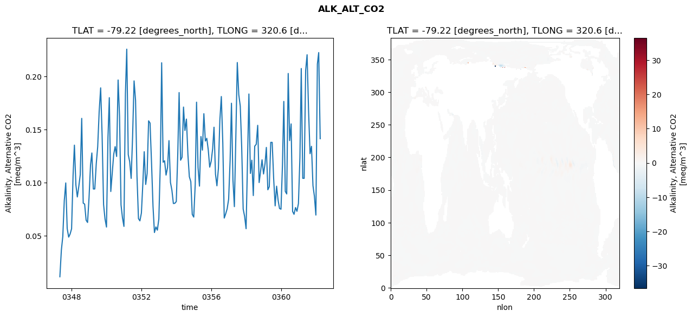
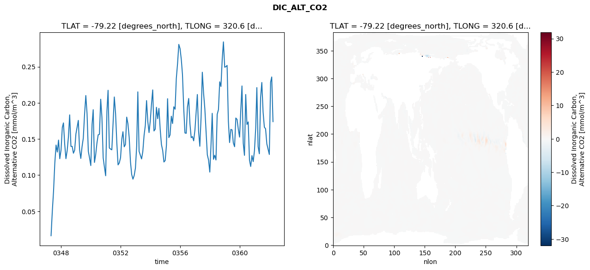
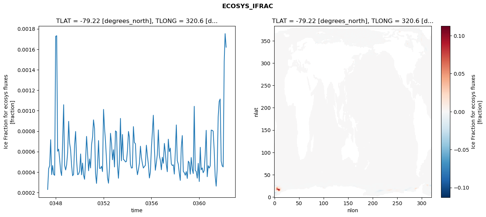
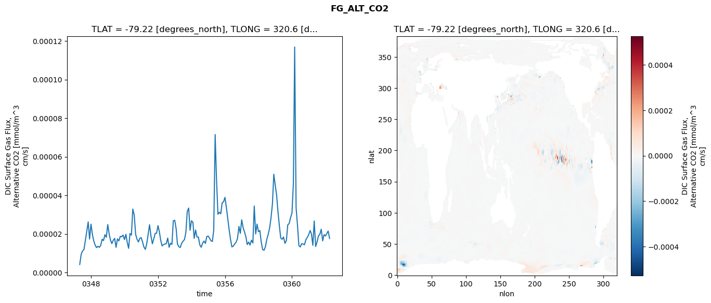

glb-dor_North_Atlantic_basin_039_1999-04-01_00157#
Simulation details#
Case: smyle.cdr-atlas-v0.glb-dor_North_Atlantic_basin_039_1999-04-01_00157.001
Basin: North_Atlantic_basin
Polygon: 39.0
Start date: 1999-04
Show code cell source Hide code cell source
import xarray as xr
import matplotlib.pyplot as plt
Show code cell source Hide code cell source
zarr_store = "/path/to/zarr/store"
# Parameters
zarr_store = "/global/cfs/projectdirs/m4746/Projects/Ocean-CDR-Atlas-v0/data/validation/smyle.cdr-atlas-v0.glb-dor_North_Atlantic_basin_039_1999-04-01_00157.001.validation.zarr"
Show code cell source Hide code cell source
%%time
ds_o = xr.open_zarr(zarr_store).compute()
ds_o
CPU times: user 623 ms, sys: 481 ms, total: 1.1 s
Wall time: 1.25 s
<xarray.Dataset> Size: 2MB
Dimensions: (nlat: 384, nlon: 320, time: 180)
Coordinates:
TLAT float64 8B -79.22
TLONG float64 8B 320.6
ULAT float64 8B -78.95
ULONG float64 8B 321.1
* time (time) object 1kB 0347-05-01 00:00:00 ... 0362-04-01 0...
z_t float32 4B 500.0
Dimensions without coordinates: nlat, nlon
Data variables:
ALK_ALT_CO2_diff (nlat, nlon) float32 492kB nan nan nan ... nan nan nan
ALK_ALT_CO2_rmse (time) float64 1kB 0.01155 0.03651 ... 0.2225 0.1414
DIC_ALT_CO2_diff (nlat, nlon) float32 492kB nan nan nan ... nan nan nan
DIC_ALT_CO2_rmse (time) float64 1kB 0.01617 0.05009 ... 0.2359 0.174
ECOSYS_IFRAC_diff (nlat, nlon) float32 492kB nan nan nan ... nan nan nan
ECOSYS_IFRAC_rmse (time) float64 1kB 0.0002303 0.0004337 ... 0.00162
FG_ALT_CO2_diff (nlat, nlon) float32 492kB nan nan nan ... nan nan nan
FG_ALT_CO2_rmse (time) float64 1kB 4.101e-06 9.352e-06 ... 1.759e-05xarray.Dataset
- nlat: 384
- nlon: 320
- time: 180
- TLAT()float64-79.22
- long_name :
- array of t-grid latitudes
- units :
- degrees_north
array(-79.22052261)
- TLONG()float64320.6
- long_name :
- array of t-grid longitudes
- units :
- degrees_east
array(320.56250892)
- ULAT()float64-78.95
- long_name :
- array of u-grid latitudes
- units :
- degrees_north
array(-78.95289509)
- ULONG()float64321.1
- long_name :
- array of u-grid longitudes
- units :
- degrees_east
array(321.12500894)
- time(time)object0347-05-01 00:00:00 ... 0362-04-...
- bounds :
- time_bound
- long_name :
- time
array([cftime.DatetimeNoLeap(347, 5, 1, 0, 0, 0, 0, has_year_zero=True), cftime.DatetimeNoLeap(347, 6, 1, 0, 0, 0, 0, has_year_zero=True), cftime.DatetimeNoLeap(347, 7, 1, 0, 0, 0, 0, has_year_zero=True), cftime.DatetimeNoLeap(347, 8, 1, 0, 0, 0, 0, has_year_zero=True), cftime.DatetimeNoLeap(347, 9, 1, 0, 0, 0, 0, has_year_zero=True), cftime.DatetimeNoLeap(347, 10, 1, 0, 0, 0, 0, has_year_zero=True), cftime.DatetimeNoLeap(347, 11, 1, 0, 0, 0, 0, has_year_zero=True), cftime.DatetimeNoLeap(347, 12, 1, 0, 0, 0, 0, has_year_zero=True), cftime.DatetimeNoLeap(348, 1, 1, 0, 0, 0, 0, has_year_zero=True), cftime.DatetimeNoLeap(348, 2, 1, 0, 0, 0, 0, has_year_zero=True), cftime.DatetimeNoLeap(348, 3, 1, 0, 0, 0, 0, has_year_zero=True), cftime.DatetimeNoLeap(348, 4, 1, 0, 0, 0, 0, has_year_zero=True), cftime.DatetimeNoLeap(348, 5, 1, 0, 0, 0, 0, has_year_zero=True), cftime.DatetimeNoLeap(348, 6, 1, 0, 0, 0, 0, has_year_zero=True), cftime.DatetimeNoLeap(348, 7, 1, 0, 0, 0, 0, has_year_zero=True), cftime.DatetimeNoLeap(348, 8, 1, 0, 0, 0, 0, has_year_zero=True), cftime.DatetimeNoLeap(348, 9, 1, 0, 0, 0, 0, has_year_zero=True), cftime.DatetimeNoLeap(348, 10, 1, 0, 0, 0, 0, has_year_zero=True), cftime.DatetimeNoLeap(348, 11, 1, 0, 0, 0, 0, has_year_zero=True), cftime.DatetimeNoLeap(348, 12, 1, 0, 0, 0, 0, has_year_zero=True), cftime.DatetimeNoLeap(349, 1, 1, 0, 0, 0, 0, has_year_zero=True), cftime.DatetimeNoLeap(349, 2, 1, 0, 0, 0, 0, has_year_zero=True), cftime.DatetimeNoLeap(349, 3, 1, 0, 0, 0, 0, has_year_zero=True), cftime.DatetimeNoLeap(349, 4, 1, 0, 0, 0, 0, has_year_zero=True), cftime.DatetimeNoLeap(349, 5, 1, 0, 0, 0, 0, has_year_zero=True), cftime.DatetimeNoLeap(349, 6, 1, 0, 0, 0, 0, has_year_zero=True), cftime.DatetimeNoLeap(349, 7, 1, 0, 0, 0, 0, has_year_zero=True), cftime.DatetimeNoLeap(349, 8, 1, 0, 0, 0, 0, has_year_zero=True), cftime.DatetimeNoLeap(349, 9, 1, 0, 0, 0, 0, has_year_zero=True), cftime.DatetimeNoLeap(349, 10, 1, 0, 0, 0, 0, has_year_zero=True), cftime.DatetimeNoLeap(349, 11, 1, 0, 0, 0, 0, has_year_zero=True), cftime.DatetimeNoLeap(349, 12, 1, 0, 0, 0, 0, has_year_zero=True), cftime.DatetimeNoLeap(350, 1, 1, 0, 0, 0, 0, has_year_zero=True), cftime.DatetimeNoLeap(350, 2, 1, 0, 0, 0, 0, has_year_zero=True), cftime.DatetimeNoLeap(350, 3, 1, 0, 0, 0, 0, has_year_zero=True), cftime.DatetimeNoLeap(350, 4, 1, 0, 0, 0, 0, has_year_zero=True), cftime.DatetimeNoLeap(350, 5, 1, 0, 0, 0, 0, has_year_zero=True), cftime.DatetimeNoLeap(350, 6, 1, 0, 0, 0, 0, has_year_zero=True), cftime.DatetimeNoLeap(350, 7, 1, 0, 0, 0, 0, has_year_zero=True), cftime.DatetimeNoLeap(350, 8, 1, 0, 0, 0, 0, has_year_zero=True), cftime.DatetimeNoLeap(350, 9, 1, 0, 0, 0, 0, has_year_zero=True), cftime.DatetimeNoLeap(350, 10, 1, 0, 0, 0, 0, has_year_zero=True), cftime.DatetimeNoLeap(350, 11, 1, 0, 0, 0, 0, has_year_zero=True), cftime.DatetimeNoLeap(350, 12, 1, 0, 0, 0, 0, has_year_zero=True), cftime.DatetimeNoLeap(351, 1, 1, 0, 0, 0, 0, has_year_zero=True), cftime.DatetimeNoLeap(351, 2, 1, 0, 0, 0, 0, has_year_zero=True), cftime.DatetimeNoLeap(351, 3, 1, 0, 0, 0, 0, has_year_zero=True), cftime.DatetimeNoLeap(351, 4, 1, 0, 0, 0, 0, has_year_zero=True), cftime.DatetimeNoLeap(351, 5, 1, 0, 0, 0, 0, has_year_zero=True), cftime.DatetimeNoLeap(351, 6, 1, 0, 0, 0, 0, has_year_zero=True), cftime.DatetimeNoLeap(351, 7, 1, 0, 0, 0, 0, has_year_zero=True), cftime.DatetimeNoLeap(351, 8, 1, 0, 0, 0, 0, has_year_zero=True), cftime.DatetimeNoLeap(351, 9, 1, 0, 0, 0, 0, has_year_zero=True), cftime.DatetimeNoLeap(351, 10, 1, 0, 0, 0, 0, has_year_zero=True), cftime.DatetimeNoLeap(351, 11, 1, 0, 0, 0, 0, has_year_zero=True), cftime.DatetimeNoLeap(351, 12, 1, 0, 0, 0, 0, has_year_zero=True), cftime.DatetimeNoLeap(352, 1, 1, 0, 0, 0, 0, has_year_zero=True), cftime.DatetimeNoLeap(352, 2, 1, 0, 0, 0, 0, has_year_zero=True), cftime.DatetimeNoLeap(352, 3, 1, 0, 0, 0, 0, has_year_zero=True), cftime.DatetimeNoLeap(352, 4, 1, 0, 0, 0, 0, has_year_zero=True), cftime.DatetimeNoLeap(352, 5, 1, 0, 0, 0, 0, has_year_zero=True), cftime.DatetimeNoLeap(352, 6, 1, 0, 0, 0, 0, has_year_zero=True), cftime.DatetimeNoLeap(352, 7, 1, 0, 0, 0, 0, has_year_zero=True), cftime.DatetimeNoLeap(352, 8, 1, 0, 0, 0, 0, has_year_zero=True), cftime.DatetimeNoLeap(352, 9, 1, 0, 0, 0, 0, has_year_zero=True), cftime.DatetimeNoLeap(352, 10, 1, 0, 0, 0, 0, has_year_zero=True), cftime.DatetimeNoLeap(352, 11, 1, 0, 0, 0, 0, has_year_zero=True), cftime.DatetimeNoLeap(352, 12, 1, 0, 0, 0, 0, has_year_zero=True), cftime.DatetimeNoLeap(353, 1, 1, 0, 0, 0, 0, has_year_zero=True), cftime.DatetimeNoLeap(353, 2, 1, 0, 0, 0, 0, has_year_zero=True), cftime.DatetimeNoLeap(353, 3, 1, 0, 0, 0, 0, has_year_zero=True), cftime.DatetimeNoLeap(353, 4, 1, 0, 0, 0, 0, has_year_zero=True), cftime.DatetimeNoLeap(353, 5, 1, 0, 0, 0, 0, has_year_zero=True), cftime.DatetimeNoLeap(353, 6, 1, 0, 0, 0, 0, has_year_zero=True), cftime.DatetimeNoLeap(353, 7, 1, 0, 0, 0, 0, has_year_zero=True), cftime.DatetimeNoLeap(353, 8, 1, 0, 0, 0, 0, has_year_zero=True), cftime.DatetimeNoLeap(353, 9, 1, 0, 0, 0, 0, has_year_zero=True), cftime.DatetimeNoLeap(353, 10, 1, 0, 0, 0, 0, has_year_zero=True), cftime.DatetimeNoLeap(353, 11, 1, 0, 0, 0, 0, has_year_zero=True), cftime.DatetimeNoLeap(353, 12, 1, 0, 0, 0, 0, has_year_zero=True), cftime.DatetimeNoLeap(354, 1, 1, 0, 0, 0, 0, has_year_zero=True), cftime.DatetimeNoLeap(354, 2, 1, 0, 0, 0, 0, has_year_zero=True), cftime.DatetimeNoLeap(354, 3, 1, 0, 0, 0, 0, has_year_zero=True), cftime.DatetimeNoLeap(354, 4, 1, 0, 0, 0, 0, has_year_zero=True), cftime.DatetimeNoLeap(354, 5, 1, 0, 0, 0, 0, has_year_zero=True), cftime.DatetimeNoLeap(354, 6, 1, 0, 0, 0, 0, has_year_zero=True), cftime.DatetimeNoLeap(354, 7, 1, 0, 0, 0, 0, has_year_zero=True), cftime.DatetimeNoLeap(354, 8, 1, 0, 0, 0, 0, has_year_zero=True), cftime.DatetimeNoLeap(354, 9, 1, 0, 0, 0, 0, has_year_zero=True), cftime.DatetimeNoLeap(354, 10, 1, 0, 0, 0, 0, has_year_zero=True), cftime.DatetimeNoLeap(354, 11, 1, 0, 0, 0, 0, has_year_zero=True), cftime.DatetimeNoLeap(354, 12, 1, 0, 0, 0, 0, has_year_zero=True), cftime.DatetimeNoLeap(355, 1, 1, 0, 0, 0, 0, has_year_zero=True), cftime.DatetimeNoLeap(355, 2, 1, 0, 0, 0, 0, has_year_zero=True), cftime.DatetimeNoLeap(355, 3, 1, 0, 0, 0, 0, has_year_zero=True), cftime.DatetimeNoLeap(355, 4, 1, 0, 0, 0, 0, has_year_zero=True), cftime.DatetimeNoLeap(355, 5, 1, 0, 0, 0, 0, has_year_zero=True), cftime.DatetimeNoLeap(355, 6, 1, 0, 0, 0, 0, has_year_zero=True), cftime.DatetimeNoLeap(355, 7, 1, 0, 0, 0, 0, has_year_zero=True), cftime.DatetimeNoLeap(355, 8, 1, 0, 0, 0, 0, has_year_zero=True), cftime.DatetimeNoLeap(355, 9, 1, 0, 0, 0, 0, has_year_zero=True), cftime.DatetimeNoLeap(355, 10, 1, 0, 0, 0, 0, has_year_zero=True), cftime.DatetimeNoLeap(355, 11, 1, 0, 0, 0, 0, has_year_zero=True), cftime.DatetimeNoLeap(355, 12, 1, 0, 0, 0, 0, has_year_zero=True), cftime.DatetimeNoLeap(356, 1, 1, 0, 0, 0, 0, has_year_zero=True), cftime.DatetimeNoLeap(356, 2, 1, 0, 0, 0, 0, has_year_zero=True), cftime.DatetimeNoLeap(356, 3, 1, 0, 0, 0, 0, has_year_zero=True), cftime.DatetimeNoLeap(356, 4, 1, 0, 0, 0, 0, has_year_zero=True), cftime.DatetimeNoLeap(356, 5, 1, 0, 0, 0, 0, has_year_zero=True), cftime.DatetimeNoLeap(356, 6, 1, 0, 0, 0, 0, has_year_zero=True), cftime.DatetimeNoLeap(356, 7, 1, 0, 0, 0, 0, has_year_zero=True), cftime.DatetimeNoLeap(356, 8, 1, 0, 0, 0, 0, has_year_zero=True), cftime.DatetimeNoLeap(356, 9, 1, 0, 0, 0, 0, has_year_zero=True), cftime.DatetimeNoLeap(356, 10, 1, 0, 0, 0, 0, has_year_zero=True), cftime.DatetimeNoLeap(356, 11, 1, 0, 0, 0, 0, has_year_zero=True), cftime.DatetimeNoLeap(356, 12, 1, 0, 0, 0, 0, has_year_zero=True), cftime.DatetimeNoLeap(357, 1, 1, 0, 0, 0, 0, has_year_zero=True), cftime.DatetimeNoLeap(357, 2, 1, 0, 0, 0, 0, has_year_zero=True), cftime.DatetimeNoLeap(357, 3, 1, 0, 0, 0, 0, has_year_zero=True), cftime.DatetimeNoLeap(357, 4, 1, 0, 0, 0, 0, has_year_zero=True), cftime.DatetimeNoLeap(357, 5, 1, 0, 0, 0, 0, has_year_zero=True), cftime.DatetimeNoLeap(357, 6, 1, 0, 0, 0, 0, has_year_zero=True), cftime.DatetimeNoLeap(357, 7, 1, 0, 0, 0, 0, has_year_zero=True), cftime.DatetimeNoLeap(357, 8, 1, 0, 0, 0, 0, has_year_zero=True), cftime.DatetimeNoLeap(357, 9, 1, 0, 0, 0, 0, has_year_zero=True), cftime.DatetimeNoLeap(357, 10, 1, 0, 0, 0, 0, has_year_zero=True), cftime.DatetimeNoLeap(357, 11, 1, 0, 0, 0, 0, has_year_zero=True), cftime.DatetimeNoLeap(357, 12, 1, 0, 0, 0, 0, has_year_zero=True), cftime.DatetimeNoLeap(358, 1, 1, 0, 0, 0, 0, has_year_zero=True), cftime.DatetimeNoLeap(358, 2, 1, 0, 0, 0, 0, has_year_zero=True), cftime.DatetimeNoLeap(358, 3, 1, 0, 0, 0, 0, has_year_zero=True), cftime.DatetimeNoLeap(358, 4, 1, 0, 0, 0, 0, has_year_zero=True), cftime.DatetimeNoLeap(358, 5, 1, 0, 0, 0, 0, has_year_zero=True), cftime.DatetimeNoLeap(358, 6, 1, 0, 0, 0, 0, has_year_zero=True), cftime.DatetimeNoLeap(358, 7, 1, 0, 0, 0, 0, has_year_zero=True), cftime.DatetimeNoLeap(358, 8, 1, 0, 0, 0, 0, has_year_zero=True), cftime.DatetimeNoLeap(358, 9, 1, 0, 0, 0, 0, has_year_zero=True), cftime.DatetimeNoLeap(358, 10, 1, 0, 0, 0, 0, has_year_zero=True), cftime.DatetimeNoLeap(358, 11, 1, 0, 0, 0, 0, has_year_zero=True), cftime.DatetimeNoLeap(358, 12, 1, 0, 0, 0, 0, has_year_zero=True), cftime.DatetimeNoLeap(359, 1, 1, 0, 0, 0, 0, has_year_zero=True), cftime.DatetimeNoLeap(359, 2, 1, 0, 0, 0, 0, has_year_zero=True), cftime.DatetimeNoLeap(359, 3, 1, 0, 0, 0, 0, has_year_zero=True), cftime.DatetimeNoLeap(359, 4, 1, 0, 0, 0, 0, has_year_zero=True), cftime.DatetimeNoLeap(359, 5, 1, 0, 0, 0, 0, has_year_zero=True), cftime.DatetimeNoLeap(359, 6, 1, 0, 0, 0, 0, has_year_zero=True), cftime.DatetimeNoLeap(359, 7, 1, 0, 0, 0, 0, has_year_zero=True), cftime.DatetimeNoLeap(359, 8, 1, 0, 0, 0, 0, has_year_zero=True), cftime.DatetimeNoLeap(359, 9, 1, 0, 0, 0, 0, has_year_zero=True), cftime.DatetimeNoLeap(359, 10, 1, 0, 0, 0, 0, has_year_zero=True), cftime.DatetimeNoLeap(359, 11, 1, 0, 0, 0, 0, has_year_zero=True), cftime.DatetimeNoLeap(359, 12, 1, 0, 0, 0, 0, has_year_zero=True), cftime.DatetimeNoLeap(360, 1, 1, 0, 0, 0, 0, has_year_zero=True), cftime.DatetimeNoLeap(360, 2, 1, 0, 0, 0, 0, has_year_zero=True), cftime.DatetimeNoLeap(360, 3, 1, 0, 0, 0, 0, has_year_zero=True), cftime.DatetimeNoLeap(360, 4, 1, 0, 0, 0, 0, has_year_zero=True), cftime.DatetimeNoLeap(360, 5, 1, 0, 0, 0, 0, has_year_zero=True), cftime.DatetimeNoLeap(360, 6, 1, 0, 0, 0, 0, has_year_zero=True), cftime.DatetimeNoLeap(360, 7, 1, 0, 0, 0, 0, has_year_zero=True), cftime.DatetimeNoLeap(360, 8, 1, 0, 0, 0, 0, has_year_zero=True), cftime.DatetimeNoLeap(360, 9, 1, 0, 0, 0, 0, has_year_zero=True), cftime.DatetimeNoLeap(360, 10, 1, 0, 0, 0, 0, has_year_zero=True), cftime.DatetimeNoLeap(360, 11, 1, 0, 0, 0, 0, has_year_zero=True), cftime.DatetimeNoLeap(360, 12, 1, 0, 0, 0, 0, has_year_zero=True), cftime.DatetimeNoLeap(361, 1, 1, 0, 0, 0, 0, has_year_zero=True), cftime.DatetimeNoLeap(361, 2, 1, 0, 0, 0, 0, has_year_zero=True), cftime.DatetimeNoLeap(361, 3, 1, 0, 0, 0, 0, has_year_zero=True), cftime.DatetimeNoLeap(361, 4, 1, 0, 0, 0, 0, has_year_zero=True), cftime.DatetimeNoLeap(361, 5, 1, 0, 0, 0, 0, has_year_zero=True), cftime.DatetimeNoLeap(361, 6, 1, 0, 0, 0, 0, has_year_zero=True), cftime.DatetimeNoLeap(361, 7, 1, 0, 0, 0, 0, has_year_zero=True), cftime.DatetimeNoLeap(361, 8, 1, 0, 0, 0, 0, has_year_zero=True), cftime.DatetimeNoLeap(361, 9, 1, 0, 0, 0, 0, has_year_zero=True), cftime.DatetimeNoLeap(361, 10, 1, 0, 0, 0, 0, has_year_zero=True), cftime.DatetimeNoLeap(361, 11, 1, 0, 0, 0, 0, has_year_zero=True), cftime.DatetimeNoLeap(361, 12, 1, 0, 0, 0, 0, has_year_zero=True), cftime.DatetimeNoLeap(362, 1, 1, 0, 0, 0, 0, has_year_zero=True), cftime.DatetimeNoLeap(362, 2, 1, 0, 0, 0, 0, has_year_zero=True), cftime.DatetimeNoLeap(362, 3, 1, 0, 0, 0, 0, has_year_zero=True), cftime.DatetimeNoLeap(362, 4, 1, 0, 0, 0, 0, has_year_zero=True)], dtype=object) - z_t()float32500.0
- long_name :
- depth from surface to midpoint of layer
- positive :
- down
- units :
- centimeters
- valid_max :
- 537500.0
- valid_min :
- 500.0
array(500., dtype=float32)
- ALK_ALT_CO2_diff(nlat, nlon)float32nan nan nan nan ... nan nan nan nan
- cell_methods :
- time: mean
- grid_loc :
- 3111
- long_name :
- Alkalinity, Alternative CO2
- units :
- meq/m^3
array([[ nan, nan, nan, ..., nan, nan, nan], [ nan, nan, nan, ..., nan, nan, nan], [-0.00683594, 0.00195312, 0.01318359, ..., nan, nan, nan], ..., [ nan, nan, nan, ..., nan, nan, nan], [ nan, nan, nan, ..., nan, nan, nan], [ nan, nan, nan, ..., nan, nan, nan]], dtype=float32) - ALK_ALT_CO2_rmse(time)float640.01155 0.03651 ... 0.2225 0.1414
- cell_methods :
- time: mean
- grid_loc :
- 3111
- long_name :
- Alkalinity, Alternative CO2
- units :
- meq/m^3
array([0.01155294, 0.03651259, 0.04944972, 0.08315566, 0.0998298 , 0.056933 , 0.04886161, 0.05176752, 0.05671233, 0.10694662, 0.13538663, 0.09793438, 0.08664671, 0.09659385, 0.10750533, 0.16056904, 0.08085883, 0.07990735, 0.06475044, 0.06263319, 0.08593716, 0.11689233, 0.1280165 , 0.09413252, 0.09417118, 0.11796847, 0.13385394, 0.16708587, 0.1892824 , 0.14538386, 0.07953729, 0.06600732, 0.05832176, 0.14284974, 0.18005582, 0.09175456, 0.10913055, 0.12674735, 0.13397879, 0.12473315, 0.19668641, 0.16268102, 0.07920577, 0.06707245, 0.05891661, 0.1837227 , 0.22569559, 0.12643287, 0.11991289, 0.10408505, 0.14335243, 0.19583804, 0.17752654, 0.10622668, 0.06626013, 0.06414598, 0.07147437, 0.09969325, 0.12921477, 0.09840074, 0.1087073 , 0.15825221, 0.15619928, 0.11901696, 0.07794956, 0.05318459, 0.05845455, 0.0553786 , 0.06591227, 0.11800853, 0.2128822 , 0.11929079, 0.12068679, 0.10722331, 0.11407815, 0.13963814, 0.10030059, 0.0930361 , 0.08046758, 0.08065475, 0.08231715, 0.12691664, 0.18485637, 0.12120524, 0.12392929, 0.17121876, 0.14917781, 0.15991485, 0.12656141, 0.10567298, 0.10098863, 0.07023761, 0.06769204, 0.09827365, 0.17581318, 0.11425025, 0.09682184, 0.14348269, 0.13068914, 0.164975 , 0.1392356 , 0.14181883, 0.13085689, 0.11469586, 0.12021545, 0.13213711, 0.15225861, 0.10806836, 0.09713572, 0.11346646, 0.15870357, 0.18113165, 0.13750294, 0.06676489, 0.07083028, 0.07547337, 0.08449633, 0.1211919 , 0.17481273, 0.10261913, 0.07752578, 0.14388589, 0.21312004, 0.18298674, 0.17216929, 0.1337701 , 0.07531684, 0.0683634 , 0.0567667 , 0.12254459, 0.18351231, 0.1087908 , 0.1212135 , 0.08794245, 0.13447015, 0.13615733, 0.15403695, 0.10018974, 0.11088982, 0.12159649, 0.10826752, 0.1179607 , 0.1332387 , 0.0933905 , 0.09628803, 0.13800488, 0.13797866, 0.10373069, 0.07825125, 0.09677034, 0.08374588, 0.07582589, 0.07512599, 0.11687115, 0.17652171, 0.09188059, 0.08945474, 0.20282386, 0.1396536 , 0.15536838, 0.07299547, 0.07031123, 0.07667456, 0.07312868, 0.08044042, 0.12378633, 0.20749013, 0.10418141, 0.1041486 , 0.2057685 , 0.22043594, 0.16759403, 0.12736789, 0.13427709, 0.09728716, 0.08724365, 0.06960202, 0.21163119, 0.22247918, 0.14144802]) - DIC_ALT_CO2_diff(nlat, nlon)float32nan nan nan nan ... nan nan nan nan
- cell_methods :
- time: mean
- grid_loc :
- 3111
- long_name :
- Dissolved Inorganic Carbon, Alternative CO2
- units :
- mmol/m^3
array([[ nan, nan, nan, ..., nan, nan, nan], [ nan, nan, nan, ..., nan, nan, nan], [-0.12402344, -0.08813477, -0.05029297, ..., nan, nan, nan], ..., [ nan, nan, nan, ..., nan, nan, nan], [ nan, nan, nan, ..., nan, nan, nan], [ nan, nan, nan, ..., nan, nan, nan]], dtype=float32) - DIC_ALT_CO2_rmse(time)float640.01617 0.05009 ... 0.2359 0.174
- cell_methods :
- time: mean
- grid_loc :
- 3111
- long_name :
- Dissolved Inorganic Carbon, Alternative CO2
- units :
- mmol/m^3
array([0.01617321, 0.05008759, 0.07764718, 0.11647668, 0.14162299, 0.13196375, 0.14851558, 0.12273309, 0.13458365, 0.16593004, 0.17227983, 0.14280535, 0.12279764, 0.13409953, 0.15294883, 0.18339865, 0.13976276, 0.13985393, 0.13035848, 0.13456432, 0.15708926, 0.16674683, 0.17576773, 0.13499557, 0.12311514, 0.13963694, 0.1511506 , 0.18424098, 0.21016952, 0.18532763, 0.13322228, 0.12393463, 0.11324175, 0.17023592, 0.19055441, 0.1176007 , 0.12819083, 0.14444944, 0.15575902, 0.15645882, 0.20507257, 0.17999492, 0.12404627, 0.11117044, 0.09914342, 0.18881642, 0.2174441 , 0.13767897, 0.13607998, 0.13507875, 0.17106673, 0.20816071, 0.18518692, 0.14525455, 0.11419666, 0.11686824, 0.12411525, 0.14995713, 0.16007871, 0.13921289, 0.1424564 , 0.18029576, 0.17117097, 0.15214018, 0.11866163, 0.10093641, 0.0944532 , 0.09934173, 0.10974338, 0.14040841, 0.21523099, 0.13300594, 0.12768061, 0.12244745, 0.13263994, 0.15484459, 0.16899301, 0.20317286, 0.17401311, 0.15890497, 0.17570648, 0.19966324, 0.21795455, 0.16113076, 0.16353506, 0.19388342, 0.17811707, 0.19240054, 0.16306284, 0.14243222, 0.13409336, 0.11819469, 0.12022864, 0.14155634, 0.20574555, 0.15192396, 0.15569476, 0.18152313, 0.1714345 , 0.19462085, 0.1912176 , 0.23376778, 0.25466503, 0.28094849, 0.27510843, 0.25978199, 0.23946004, 0.19248848, 0.15836915, 0.15785557, 0.19430809, 0.20612948, 0.17080433, 0.15185726, 0.15334841, 0.14749979, 0.1624188 , 0.18818701, 0.21159893, 0.16013014, 0.13998391, 0.18015876, 0.2424126 , 0.21352375, 0.19186596, 0.16102768, 0.12815484, 0.12091362, 0.10425596, 0.14417222, 0.18555295, 0.12193861, 0.12753956, 0.12102273, 0.18410199, 0.19063933, 0.22916609, 0.22269353, 0.2599152 , 0.28442465, 0.24934903, 0.25014741, 0.25186554, 0.17489671, 0.1451011 , 0.16337875, 0.16257404, 0.1445762 , 0.13933425, 0.17905688, 0.17706355, 0.16336053, 0.15265112, 0.19114158, 0.22342218, 0.14423684, 0.12736441, 0.21161535, 0.17012457, 0.17366215, 0.12076806, 0.11199126, 0.1270435 , 0.11875672, 0.1335691 , 0.16522664, 0.22115244, 0.13940568, 0.12959096, 0.20777877, 0.22824397, 0.18730991, 0.16642617, 0.16414047, 0.14322074, 0.13604461, 0.12859032, 0.2285613 , 0.23585355, 0.17402746]) - ECOSYS_IFRAC_diff(nlat, nlon)float32nan nan nan nan ... nan nan nan nan
- cell_methods :
- time: mean
- grid_loc :
- 2110
- long_name :
- Ice Fraction for ecosys fluxes
- units :
- fraction
array([[ nan, nan, nan, ..., nan, nan, nan], [ nan, nan, nan, ..., nan, nan, nan], [-0.00029641, -0.00441879, -0.00319362, ..., nan, nan, nan], ..., [ nan, nan, nan, ..., nan, nan, nan], [ nan, nan, nan, ..., nan, nan, nan], [ nan, nan, nan, ..., nan, nan, nan]], dtype=float32) - ECOSYS_IFRAC_rmse(time)float640.0002303 0.0004337 ... 0.00162
- cell_methods :
- time: mean
- grid_loc :
- 2110
- long_name :
- Ice Fraction for ecosys fluxes
- units :
- fraction
array([0.00023026, 0.0004337 , 0.00046143, 0.00071628, 0.00037503, 0.00046387, 0.00037782, 0.00036845, 0.00172625, 0.00173205, 0.00060339, 0.00062402, 0.00052975, 0.00041038, 0.00036611, 0.00069392, 0.00105809, 0.00046493, 0.00042055, 0.00047027, 0.00059098, 0.0008958 , 0.00068436, 0.00061747, 0.00046518, 0.00036394, 0.00037765, 0.00066616, 0.00079683, 0.00051365, 0.00037441, 0.00038015, 0.00040891, 0.00057717, 0.00037335, 0.00048849, 0.00036998, 0.00032942, 0.00050189, 0.00074869, 0.00059037, 0.00041287, 0.00052852, 0.00044012, 0.00066918, 0.0007437 , 0.00091019, 0.00082487, 0.00038701, 0.00028932, 0.00045955, 0.00070787, 0.0004363 , 0.00043642, 0.00045651, 0.00040467, 0.00101249, 0.00082545, 0.00070336, 0.00052423, 0.00034622, 0.00029123, 0.00044151, 0.00077914, 0.00068171, 0.00051974, 0.00061872, 0.00044977, 0.00080221, 0.00079304, 0.00046634, 0.00033945, 0.00052057, 0.00092436, 0.00051038, 0.00076733, 0.0005219 , 0.00051616, 0.0004989 , 0.00050431, 0.00060987, 0.00079694, 0.0007406 , 0.00047566, 0.0004393 , 0.00044206, 0.0008442 , 0.00068831, 0.0006771 , 0.00045686, 0.00037424, 0.00042291, 0.00048986, 0.00065278, 0.00054497, 0.00048279, 0.0004395 , 0.00045451, 0.00046567, 0.00066251, 0.00056078, 0.00047447, 0.0003419 , 0.00040037, 0.00063489, 0.0007966 , 0.0009554 , 0.00064566, 0.00041774, 0.00048994, 0.00057287, 0.00081194, 0.0005599 , 0.00051531, 0.00042261, 0.00054482, 0.00048577, 0.00068013, 0.00059594, 0.00047363, 0.00040352, 0.00072112, 0.0005989 , 0.00063445, 0.00047954, 0.00046424, 0.00047074, 0.00038025, 0.00060046, 0.00086066, 0.000513 , 0.00047687, 0.00039252, 0.00031875, 0.00063968, 0.00075693, 0.00040747, 0.00039393, 0.00036923, 0.00040499, 0.00033787, 0.00050637, 0.00049211, 0.00037982, 0.00054214, 0.00042942, 0.00038581, 0.00104243, 0.00041721, 0.00040597, 0.00034045, 0.0004856 , 0.00030778, 0.00064185, 0.00042198, 0.00044128, 0.00039377, 0.00041486, 0.00057288, 0.00080793, 0.00035491, 0.00046268, 0.00043854, 0.00046086, 0.00081022, 0.00080746, 0.00080015, 0.00061555, 0.00036259, 0.0002625 , 0.00042255, 0.00093776, 0.00109044, 0.00111375, 0.00050703, 0.00046076, 0.00045037, 0.00147946, 0.00175242, 0.0016201 ]) - FG_ALT_CO2_diff(nlat, nlon)float32nan nan nan nan ... nan nan nan nan
- cell_methods :
- time: mean
- grid_loc :
- 2110
- long_name :
- DIC Surface Gas Flux, Alternative CO2
- units :
- mmol/m^3 cm/s
array([[ nan, nan, nan, ..., nan, nan, nan], [ nan, nan, nan, ..., nan, nan, nan], [7.2972907e-06, 2.0371692e-05, 1.5263096e-05, ..., nan, nan, nan], ..., [ nan, nan, nan, ..., nan, nan, nan], [ nan, nan, nan, ..., nan, nan, nan], [ nan, nan, nan, ..., nan, nan, nan]], dtype=float32) - FG_ALT_CO2_rmse(time)float644.101e-06 9.352e-06 ... 1.759e-05
- cell_methods :
- time: mean
- grid_loc :
- 2110
- long_name :
- DIC Surface Gas Flux, Alternative CO2
- units :
- mmol/m^3 cm/s
array([4.10088356e-06, 9.35238992e-06, 1.11375060e-05, 1.18898727e-05, 1.65933793e-05, 2.13032600e-05, 2.62194522e-05, 1.72937986e-05, 2.50549625e-05, 1.96507868e-05, 1.64717920e-05, 1.42163974e-05, 1.28665337e-05, 1.35809516e-05, 1.29840595e-05, 1.40131616e-05, 1.72138847e-05, 1.65119608e-05, 1.95699364e-05, 1.82190292e-05, 2.48314358e-05, 1.99749833e-05, 1.68157695e-05, 1.49613448e-05, 1.66526027e-05, 1.76535377e-05, 1.30266346e-05, 1.74009845e-05, 1.63742639e-05, 1.87390762e-05, 1.84744786e-05, 1.93909218e-05, 1.70341298e-05, 1.97624469e-05, 1.57279135e-05, 1.25101766e-05, 2.01864806e-05, 1.93522745e-05, 3.28532131e-05, 2.98170645e-05, 1.97852897e-05, 1.72405301e-05, 1.57963650e-05, 1.77391188e-05, 1.80268046e-05, 1.55376340e-05, 1.31544637e-05, 1.19683629e-05, 1.49102514e-05, 1.97707702e-05, 2.47170685e-05, 1.88912524e-05, 1.48580872e-05, 1.73655428e-05, 2.02511140e-05, 2.03377883e-05, 2.42620949e-05, 2.09566644e-05, 1.67193228e-05, 1.37517666e-05, 1.44021002e-05, 1.47965489e-05, 1.48699729e-05, 1.78404805e-05, 1.30351690e-05, 1.51626327e-05, 1.45469809e-05, 2.67374599e-05, 2.70789415e-05, 2.25966654e-05, 1.47509720e-05, 1.33545303e-05, 1.29186088e-05, 1.50883975e-05, 1.61939163e-05, 1.70215856e-05, 2.07830586e-05, 3.16128564e-05, 3.33858833e-05, 2.18806211e-05, ... 3.12255865e-05, 3.04202451e-05, 3.60978645e-05, 3.65998622e-05, 3.89306497e-05, 3.36729949e-05, 2.81919571e-05, 2.22882091e-05, 1.72468459e-05, 1.32369827e-05, 1.36387020e-05, 1.47604180e-05, 1.56921116e-05, 1.75867473e-05, 2.38659429e-05, 2.02667740e-05, 2.73118757e-05, 2.31242718e-05, 2.11361580e-05, 1.85886907e-05, 1.44613173e-05, 1.57439836e-05, 1.41967916e-05, 1.67223327e-05, 1.52837482e-05, 3.44761069e-05, 1.99468538e-05, 2.50527959e-05, 2.10998008e-05, 2.17145141e-05, 1.59086156e-05, 1.19225955e-05, 1.14703639e-05, 1.32378120e-05, 1.71414650e-05, 1.97336258e-05, 2.30757035e-05, 2.81629176e-05, 3.54216709e-05, 5.09143534e-05, 4.52676117e-05, 4.00027786e-05, 3.17380610e-05, 2.42176391e-05, 1.78507205e-05, 1.71791838e-05, 1.83751644e-05, 1.50828496e-05, 1.64904136e-05, 2.46556495e-05, 2.53441028e-05, 2.84062899e-05, 3.07597320e-05, 4.61715878e-05, 1.16881225e-04, 3.35651271e-05, 2.45582682e-05, 1.38742415e-05, 1.32192350e-05, 1.49166530e-05, 1.46930617e-05, 1.43792085e-05, 1.70510696e-05, 1.81140512e-05, 1.96497617e-05, 2.17436260e-05, 1.99968257e-05, 1.40577814e-05, 2.67039477e-05, 1.34389235e-05, 1.57651984e-05, 1.88510127e-05, 1.98284501e-05, 2.24140104e-05, 1.63623550e-05, 1.96035133e-05, 1.89155308e-05, 2.02193876e-05, 2.14557621e-05, 1.75889572e-05])
- timePandasIndex
PandasIndex(CFTimeIndex([0347-05-01 00:00:00, 0347-06-01 00:00:00, 0347-07-01 00:00:00, 0347-08-01 00:00:00, 0347-09-01 00:00:00, 0347-10-01 00:00:00, 0347-11-01 00:00:00, 0347-12-01 00:00:00, 0348-01-01 00:00:00, 0348-02-01 00:00:00, ... 0361-07-01 00:00:00, 0361-08-01 00:00:00, 0361-09-01 00:00:00, 0361-10-01 00:00:00, 0361-11-01 00:00:00, 0361-12-01 00:00:00, 0362-01-01 00:00:00, 0362-02-01 00:00:00, 0362-03-01 00:00:00, 0362-04-01 00:00:00], dtype='object', length=180, calendar='noleap', freq='MS'))
Show code cell source Hide code cell source
variables = [v[:-5] for v in ds_o.variables if "_rmse" in v]
Show code cell source Hide code cell source
plt.rcParams.update({'figure.max_open_warning': 0})
for v in variables:
fig, axs = plt.subplots(1, 2, figsize=(15, 6))
ds_o[f"{v}_rmse"].plot(ax=axs[0])
ds_o[f"{v}_diff"].plot(ax=axs[1])
plt.suptitle(v, fontweight="bold")



